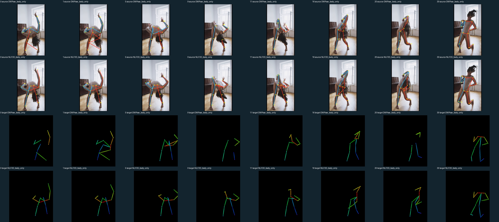

DD带标签骨架引导 · 第四例＋三个新Hard
四个已完成的同参数专项对照，共16格结果；未加入统一默认通路。原六案例页面仍保留六列。本页的“已生成”不代表“动作正确”。
六列动作适配器对照 · 统一背景通路 · 屋顶247帧
每例使用相同源RGB、Stage2首图、prompt、目标相机、初始化噪声和DD50步；骨架引导前先做零强度对照，81帧RGB全部精确复现。引导时额外运行100次冻结辅助模型预测，另有2次接口复现检查。它是两个冻结模型的推理组合，不是DD训练好的骨骼ControlNet，也没有新LoRA训练。
原视频片段＋Stage2末帧
按需加载；精确预览保留缩放后每一帧，细节请打开清晰版。
已定位的条件错误：第四例首帧
源片段第0帧（原视频f300），DWPose将一个“左手腕”点估计到脚附近，将一个“右脚踝”点估计到弯曲手臂附近；两点置信度都超过0.3。错误在投影前的源骨架中已存在。原生DD与统一背景通路不使用这张骨架，因此该证据只定位新增骨架分支，不能解释原生DD的全部错肢。
下图对比二维估计和NLF三维人体投影。三维版本在这些首段帧的肢体位置更连贯，但仍是估计，不是真值；两者均不伪造鼻子、眼睛或耳朵。图中的三维条件修正结果尚未计入上方骨架行。

错误关节坐标与置信度 · 本页结果与协议记录
本轮能证明什么
预训练辅助模型确实读取左右标签变化：同一几何骨架交换左右标签，二值绘图范围完全相同，实际预测发生变化。接入DD后的每一步差分也已记录。但这不等于已证明输出肢体左右正确，尤其当骨架估计本身有误时。
没有最终RGB拼贴、平滑、稳定化或插帧。背景变化指标和自动人体范围都不是真值；不能替代动作质量检查。
预训练接口来源：Wan2.2-Fun-5B-Control官方模型。